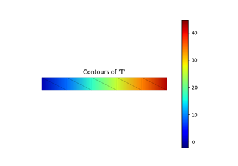
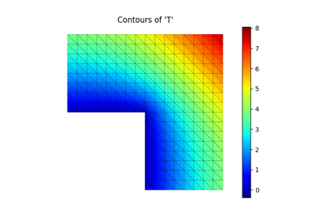
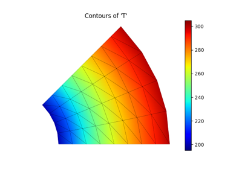

Diffusion Examples
For more in-depth information about the colormaps available in matplotlib as well as a description of their properties, see the Tutorials.

Heat transfer through a wall


Heat transfer at the corner of a building
Heat transfer at the corner of a building

Heat transfer through a thick cylinder
Heat transfer through a thick cylinder